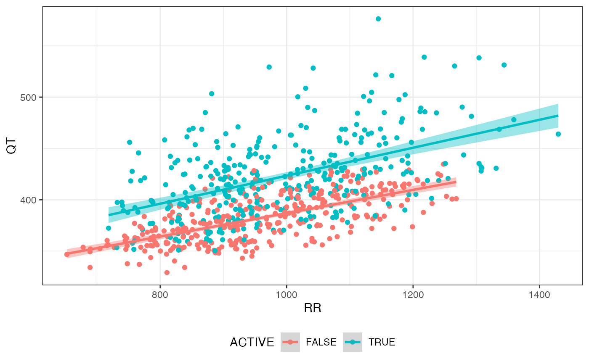
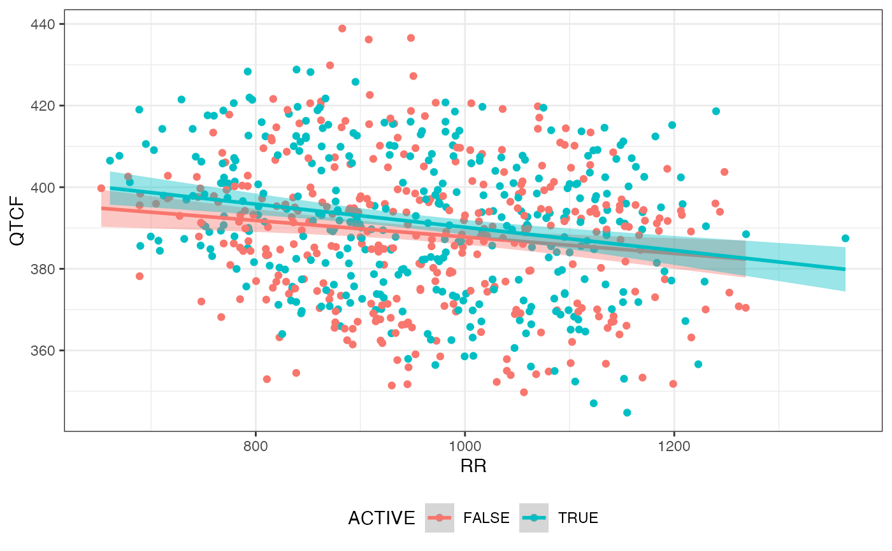

Plot ECG parameter by RR interval
Usage
rr_plot(obj, param = "QTCF", group = NULL, fit = TRUE, method = "lm", ...)
Arguments
- obj
A cqtc object.
- param
The parameter to plot.
- group
The column to be used for grouping
- fit
Show regression fit.
- method
The method for geom_smooth.
- ...
Further parameters to geom_point().
Examples
library(dplyr)
library(magrittr)
dofetilide_cqtc |>
rr_plot(param = "QT", group = "ACTIVE")

verapamil_cqtc |>
rr_plot(param = "QTCF", group = "ACTIVE")
